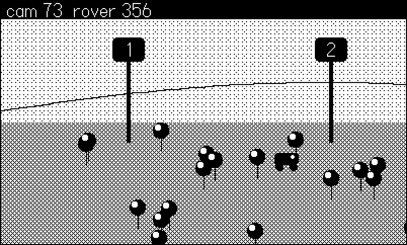
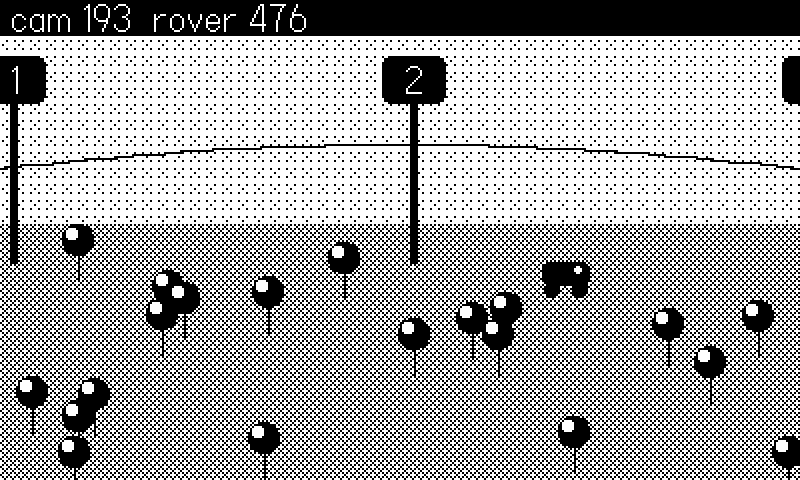
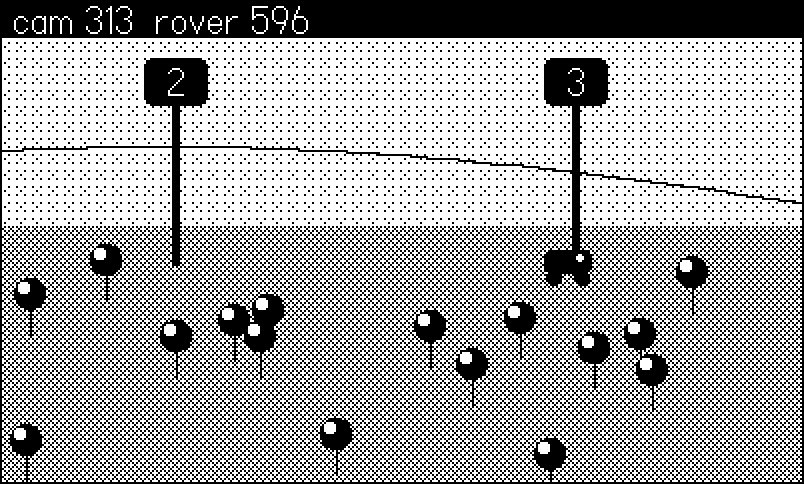
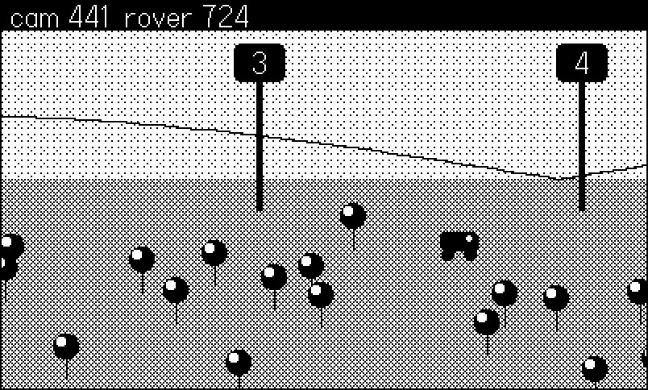

7 Cameras and Big Worlds
Four hundred by two hundred forty pixels is a porthole. The moment your game world outgrows it, every drawing call faces the same question: where on screen does this world position land right now? Answer it per-call and your code silts up with x - camX arithmetic and off-by-one seams. The Playdate’s answer is playdate.graphics.setDrawOffset: tell the graphics system once, per frame, how the world is shifted, and every subsequent drawing call is automatically translated. Entities keep drawing at their world coordinates, unaware a camera exists.
This chapter builds 07-camera: a rover driving across a 1600×480 procedurally generated landscape, chased by a camera with the three behaviors that make scrolling feel professional — smoothing (lerp), a deadzone, and hard clamping at the map edge — plus a HUD that ignores the camera entirely, and a screen shake that costs three lines because it rides the same offset. Along the way it settles the big-world rendering question: per-frame tile drawing versus one pre-rendered background image, and why the case-study games chose the image.
7.1 World space, screen space, and the draw offset
Keep two coordinate systems distinct in your head, and name variables accordingly:
- World coordinates: where things are. The rover at x = 812 of 1600. Physics, AI, and game logic live here.
- Screen coordinates: where things land this frame, 0–399 × 0–239. Only drawing cares.
gfx.setDrawOffset(dx, dy) maps between them: with the camera’s top-left at world (camX, camY), set the offset to (-camX, -camY) and a thing drawn at world (812, 300) lands at screen (812 − camX, 300 − camY). The offset applies to every draw call until changed — primitives, images, text — and resets each frame before playdate.update (a detail worth knowing: you set it every frame, not once). getDrawOffset() reads it back.
The frame’s shape, then, is a sandwich:
Cam.apply()— set the offset; draw the world (terrain, rover) in world coordinates.Cam.done()— reset the offset to (0, 0); draw the HUD in screen coordinates.
The shared camera in the Tiles engine — which scrolled four shipped games — is exactly this sandwich plus clamping and lerp, in under twenty lines:
-- tiles/core/tcam.lua:33
-- smooth-follow a world point; call once per frame
function Cam.follow(wx, wy, dt, rate)
local k = math.min(1, (rate or 6) * dt)
Cam.x = Cam.x + (clampX(wx - 200) - Cam.x) * k
Cam.y = Cam.y + (clampY(wy - 128) - Cam.y) * k
end
-- start drawing the world (includes Kit's screen shake)
function Cam.apply()
gfx.setDrawOffset(Kit.sx - math.floor(Cam.x + 0.5),
Kit.sy - math.floor(Cam.y + 0.5))
end
-- back to screen space (HUD, overlays)
function Cam.done()
gfx.setDrawOffset(0, 0)
endNote the math.floor(x + 0.5) in apply: the camera’s position is a float (lerp guarantees that), but a fractional draw offset makes every tile boundary shimmer as it rounds differently frame to frame. Round once, at the boundary between simulation and rendering.
7.2 A camera that feels right: lerp, deadzone, clamp
A camera hard-locked to the player is technically correct and feels terrible: every step twitches the entire world, and the player’s own sprite — the thing the eye tracks — never moves on screen. Three fixes compose, and the example’s camera has all three:
Cam = {
x = 0, y = 0, -- world coord of the screen's top-left
DEAD_W = 120, DEAD_H = 70,
shakeT = 0, shakeMag = 0,
}
local function clamp(v, lo, hi)
if v < lo then return lo end
if v > hi then return hi end
return v
end
-- Smooth-follow a world point with a deadzone: the camera only
-- moves when the target pushes outside the center box, and then
-- lerps toward the corrected spot.
function Cam.follow(tx, ty)
local goalX, goalY = Cam.x, Cam.y
local left = Cam.x + 200 - Cam.DEAD_W / 2
local right = Cam.x + 200 + Cam.DEAD_W / 2
local top = Cam.y + 120 - Cam.DEAD_H / 2
local bot = Cam.y + 120 + Cam.DEAD_H / 2
if tx < left then goalX = Cam.x - (left - tx) end
if tx > right then goalX = Cam.x + (tx - right) end
if ty < top then goalY = Cam.y - (top - ty) end
if ty > bot then goalY = Cam.y + (ty - bot) end
goalX = clamp(goalX, 0, World.W - 400)
goalY = clamp(goalY, 0, World.H - 240)
Cam.x = Cam.x + (goalX - Cam.x) * 0.15
Cam.y = Cam.y + (goalY - Cam.y) * 0.15
end
function Cam.shake(mag)
Cam.shakeT, Cam.shakeMag = 12, mag
end
-- Route world drawing through the draw offset. Everything drawn
-- until Cam.done() is in world coordinates.
function Cam.apply()
local sx, sy = 0, 0
if Cam.shakeT > 0 then
Cam.shakeT = Cam.shakeT - 1
local m = Cam.shakeMag * Cam.shakeT / 12
sx = (math.random() * 2 - 1) * m
sy = (math.random() * 2 - 1) * m
end
gfx.setDrawOffset(sx - math.floor(Cam.x + 0.5),
sy - math.floor(Cam.y + 0.5))
end
-- back to screen space (HUD, overlays)
function Cam.done()
gfx.setDrawOffset(0, 0)
endDeadzone. The camera ignores the target while it stays inside a center box (here 120×70). Small shuffles, idle bobs, and combat jitter don’t move the world at all; only when the target presses against the box edge does the camera concede. The player visibly walks across the screen before the world starts sliding — that on-screen travel is what makes movement legible.
Lerp. When the camera does move, it closes only a fraction (0.15) of the remaining gap each frame — exponential smoothing, the same a + (b - a) * k you will meet again in animation. Sharp direction changes become eased curves; the world glides rather than snaps. Combined with the deadzone: the box decides whether to move, the lerp decides how urgently.
Clamp. Before lerping, the goal is clamped to [0, World.W - 400] × [0, World.H - 240], so the view never slides past the edge of the world into void. Clamp the goal, not the final position, and the lerp glides to a stop against the boundary instead of hitting it like a wall. For worlds no bigger than the screen the clamp pins the camera at zero and the whole system silently disables itself — the tiles engine relies on that for its single-screen rooms.
The rover’s driving loop feeds the camera and stays oblivious to it — world coordinates only:
local function moveRover(dx)
rover.x = rover.x + dx
if rover.x > World.W - 20 then rover.x = World.W - 20 end
if rover.x < 20 then rover.x = 20 end
-- hug the terrain with a little bob
rover.y = 330 + math.sin(rover.x * 0.02) * 14
end
local function drawRover()
-- world coordinates: the draw offset places it on screen
gfx.setColor(gfx.kColorBlack)
gfx.fillRoundRect(rover.x - 12, rover.y - 10, 24, 12, 3)
gfx.fillCircleAtPoint(rover.x - 7, rover.y + 4, 4)
gfx.fillCircleAtPoint(rover.x + 7, rover.y + 4, 4)
gfx.setColor(gfx.kColorWhite)
gfx.fillCircleAtPoint(rover.x + 6, rover.y - 6, 2)
end


The three pan figures are consecutive 30-frame snapshots of one run. Read the HUD numbers: the gap between cam and rover settles to a constant — the rover rides the right edge of the deadzone box while the lerp holds a fixed lag behind it, the signature of this camera at cruising speed.
7.3 The HUD draws after Cam.done()
The frame sandwich in full, from the example’s update — world between apply and done, HUD after:
function playdate.update()
local bot = Harness.input(frame)
local dx = 0
if bot then
dx = bot.move or 0
if bot.shake then Cam.shake(6) end
else
if playdate.buttonIsPressed(playdate.kButtonRight) then
dx = 4
elseif playdate.buttonIsPressed(playdate.kButtonLeft) then
dx = -4
end
if playdate.buttonJustPressed(playdate.kButtonB) then
Cam.shake(6)
end
end
moveRover(dx)
Cam.follow(rover.x, rover.y)
gfx.clear(gfx.kColorWhite)
Cam.apply() -- world space from here
World.img:draw(0, 0) -- the whole terrain: one blit
drawRover()
Cam.done() -- back to screen space
-- HUD: drawn last, never scrolls
gfx.setColor(gfx.kColorBlack)
gfx.fillRect(0, 0, 400, 18)
gfx.setImageDrawMode(gfx.kDrawModeFillWhite)
gfx.drawText("cam " .. math.floor(Cam.x)
.. " rover " .. math.floor(rover.x), 6, 1)
gfx.setImageDrawMode(gfx.kDrawModeCopy)
endDraw the HUD while the offset is still applied and it scrolls away with the terrain — everyone does it exactly once. The other direction also bites: leave the offset set at the end of your update (skip Cam.done()) and, since the offset is just more global draw state (Chapter 4), any menu or overlay another module draws afterward inherits your camera. Same discipline, same fix: reset at the boundary. For one-off stamps there is also img:drawIgnoringOffset(x, y) (Chapter 5), and setScreenClipRect for clipping in screen space while an offset is live.
7.4 Big terrain: one blit beats a thousand draws
How should the terrain itself be drawn? The obvious answer — loop over map cells each frame, draw the visible tiles — works, and Chapter 5’s tilemap object packages it. But every one of those draws happens every frame, forever, and the tile count scales with world size. The case-study engines take a different default, stated in the header comment of the tiles engine:
-- tiles/core/tmap.lua:1
-- Tiles are 16x16, so the 400x240 screen is exactly 25x15
-- tiles; [...] A tile type is defined ONCE by character
-- (pattern fill + string-art overlay, rendered to an image at
-- def time), maps are arrays of strings with one char per
-- tile, and the whole map renders ONCE into a background
-- image. Changing a tile repaints just that 16x16 cell --
-- static terrain costs one blit per frame regardless of
-- complexity, same performance model as Vox.That last clause is the cost model to memorize: static terrain costs one blit per frame regardless of complexity. Render the whole map into a big gfx.image at load time (Chapter 5’s pushContext again, just onto a 1600×480 canvas), and the per-frame cost is a single World.img:draw(0, 0) — identical whether the world contains ten rects or ten thousand trees. The example’s landscape is exactly that:
function World.build()
World.img = gfx.image.new(World.W, World.H, gfx.kColorWhite)
gfx.pushContext(World.img)
-- sky band, ground band
gfx.setDitherPattern(0.92, gfx.image.kDitherTypeBayer8x8)
gfx.fillRect(0, 0, World.W, 300)
gfx.setDitherPattern(0.6, gfx.image.kDitherTypeBayer4x4)
gfx.fillRect(0, 300, World.W, World.H - 300)
-- rolling hill line
gfx.setColor(gfx.kColorBlack)
local py = 300
for x = 0, World.W, 8 do
local y = 300 - 40 * math.abs(math.sin(x * 0.004))
gfx.drawLine(x - 8, py, x, y)
py = y
end
-- trees, seeded so the world is the same every run
for i = 1, 60 do
local x = math.random(20, World.W - 20)
local y = math.random(320, World.H - 30)
gfx.setColor(gfx.kColorBlack)
gfx.drawLine(x, y, x, y - 14)
gfx.fillCircleAtPoint(x, y - 20, 8)
gfx.setColor(gfx.kColorWhite)
gfx.fillCircleAtPoint(x - 3, y - 23, 3)
end
-- numbered marker posts every 200 px: panning is visible
for m = 0, World.W // 200 do
local x = m * 200
gfx.setColor(gfx.kColorBlack)
gfx.fillRect(x - 2, 240, 4, 80)
gfx.fillRoundRect(x - 16, 216, 32, 24, 4)
gfx.setImageDrawMode(gfx.kDrawModeFillWhite)
gfx.drawTextAligned(tostring(m), x, 220,
kTextAlignment.center)
gfx.setImageDrawMode(gfx.kDrawModeCopy)
end
gfx.popContext()
endAnd the per-frame terrain cost, from the update loop above, is the one line World.img:draw(0, 0).
“Static” doesn’t mean frozen forever. When a game digs, burns, or builds, the tiles engine repaints only the touched cell into the background image and goes back to one-blit-per-frame:
-- tiles/core/tmap.lua:121
function Map.repaint(tx, ty)
local S = Tiles.SIZE
local d = Tiles.defs[Map.grid[ty][tx]]
if not d or not Map.bg then return end
gfx.pushContext(Map.bg)
d.img:draw((tx - 1) * S, (ty - 1) * S)
gfx.popContext()
endA 16×16 repaint on the frame a bomb goes off is invisible in the budget. The voxel engine scales the same idea up: its Vox.carve repaints only the dirty column strip of a whole 3D room. Reserve per-frame tile drawing for terrain that animates globally — flowing water everywhere, scrolling parallax layers — where every cell genuinely changes.
Memory is the honest counterweight: a 1600×480 1-bit image is about 96 KB, well within budget, but you cannot pre-render a boundless world. Past a few screens’ radius, games chunk the world and pre-render per room or region — Molt keeps one pre-rendered image per 28 rooms and rebuilds on entry.
7.5 Screen shake: the offset is already there
Once every world draw routes through one setDrawOffset call, screen shake stops being a feature and becomes an addend. The example keeps a 12-frame decaying timer; while it runs, Cam.apply adds a random jitter scaled by the remaining time (see the cam listing above — it is the shakeT branch, four lines). The tcam.lua quote does the same via its Kit.sx term.

Two rules keep shake feeling like impact rather than malfunction: decay it (the shakeT / 12 factor — a constant shake reads as a broken screen), and never shake the HUD — which the sandwich gives you for free, since the HUD draws after the offset resets. That the shake displaces markers and terrain in Figure 7.4 while the black HUD strip holds still is the whole trick, visible in one frame.
7.6 What you know now
gfx.setDrawOffset(-camX, -camY)translates all subsequent drawing: entities draw at world coordinates and never learn the camera exists. Reset it every frame; round it before setting it.- The frame sandwich:
Cam.apply()→ world →Cam.done()→ HUD. The HUD scrolls exactly once in every project’s life — yours will be because the offset was still set. - Camera feel is three composable behaviors: deadzone (ignore small moves), lerp (
cam += (goal - cam) * k), and clamping the goal to the map bounds. - The cost model: static terrain pre-rendered into one image costs one blit per frame regardless of complexity; edits repaint one cell (
Map.repaint); per-frame tile draws are for globally animating terrain only. - Screen shake is a decaying random addend inside the same offset call — three lines, HUD immune by construction.
- The shipped version of this chapter is
tiles/core/tcam.lua, the same follow-and-clamp camera bolted to a real tilemap engine and four games; Chapter 22 reads it end to end.
Next, Chapter 8 bends the same 2D screen into the third dimension: rotation matrices, perspective projection, and crank-spun wireframes — plus the rule for knowing when a projection has earned its keep.